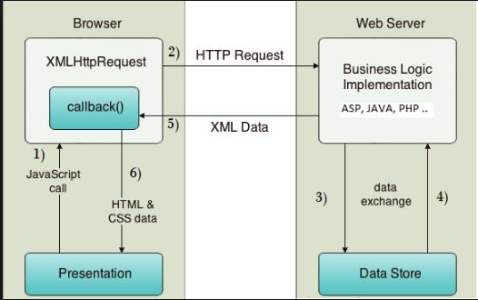
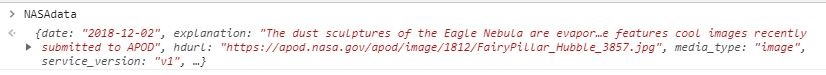

NASA API Walkthrough - Working with HTTP
Using Ajax to update data invoves the steps below:
Instantiate an XMLHttpRequest object for the web browser where the script is run.
Use the XMLHttpRequest object to send a request to the distant server.
Receive the response from the distant server containing the requested data.
Process the data returned from the distant server, and incorporate into the webpage.

The 1st step is to instantiate an HttpRequest object. The example used in the NASA Demonstration is below
var
request
= new
XMLHttpRequest();
The 2nd step is to open the connection to the Web Service. Part of this process includes sending the URL for the API as well as any parameters the API
may use. In the NASA example, the Web Servive has 3 parameters:
Query Parameters
| Parameter |
Type |
Default |
Description |
| date |
YYYY-MM-DD |
today |
The date of the image to retrieve |
| hd |
bool |
False |
Retrieve the URL for the high resolution image |
| api_key |
string |
DEMO_KEY |
api.nasa.gov key for expanded usage |
Example Query
String used in the walkthrough example. The first line assembles the connection string, the second establishes the response type, and the third sends the request
The 3rd step in the process is to capture the response from the Web Service. Since we instructed the Web Servie to respond in JSON, that is the format we will be receiving.
The image below demonstrates the unformatted response from NASA to the web call.

The 4th and final step is to parse the JSON data and use it appropriatly witin your application. In the NASA Demonstration, I displayed the image in
the image URL returned, and all of the image metadata. The response is loaded into a variable and each field is a member of an array.
In the previous figure you can see the fields: date, explaination, hdurl, media_type, service version, etc. The figure does not show them but additional
fields are also present. Those include: title, URL, and copyright. The values for each of these can be extracted from the return string.
Continueing with the NASA example you can see below each of the fields are captured and its' value mapped to an HTML field within the Demonstration web
page.
In the NASA demonstration on this site, when the page is loaded an event is fired. Within this even the call for the current days image
made and the page is populated. The user can click the button to display the previous days image or toggle back to the cuurent days image.
The methods for these event is outside of the scope of this lesson but the complete JavaScript can be seen here: